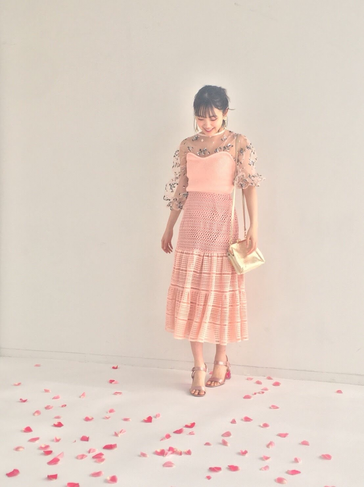
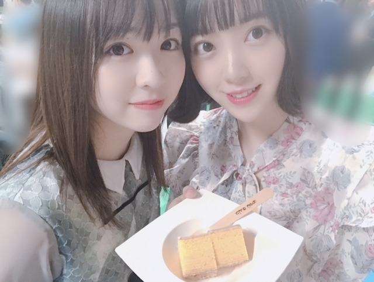
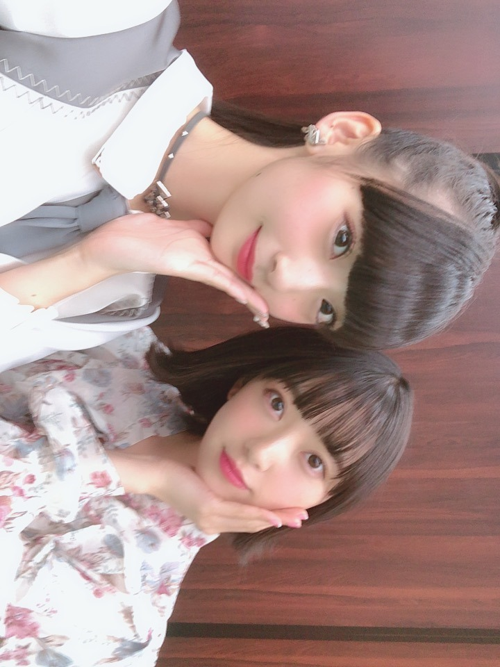
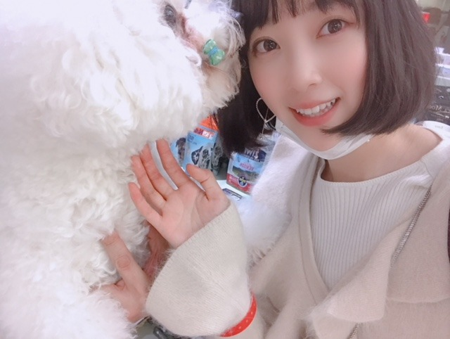
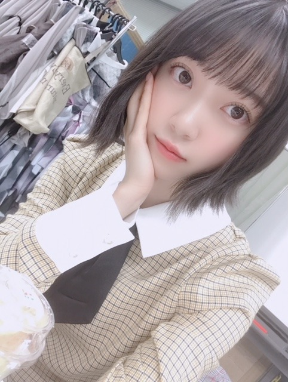

2018/1120Tueふらっと。
なんでもない日に友達や家族に
プレゼントを渡すのが好き。
分かりますか？
ぶらぶらお買い物をしていて、
あ、これ似合いそうだなとか
欲しがってたなとか思うと
なんでもない日なのについ真剣に選んでしまいます笑
旅行先でのお土産選びも大好き☺︎

でも喜んでくれる顔を想像して
相手のことを考えて
プレゼントを選んでいる時間は私も幸せだし
好きだなーって思う
サプライズが基本好きです☺︎


たまたま会った
ビションフリーゼが
かわいくってかわいくってたまりません！

ん〜飼いたい〜
ニコルとプティが嫉妬しそうだけど。笑
でもふたりには犬用おせちを予約したから
お正月喜んでくれるといいな♡

質問返し、次のブログでしようかな？
質問募集します
寒いので風邪ひかないように。。
では
2018/11/20 20:36
コメント(1390)
可愛い(∩˃o˂∩)♡
みおなちゃん！
最後の写真みたいにいいかんじに外はねにするコツはありますか？
ショートの外はねかわいいからしてみたいです！
よかったら教えてください！
最後の写真みたいにいいかんじに外はねにするコツはありますか？
ショートの外はねかわいいからしてみたいです！
よかったら教えてください！
未央奈みたいなハリのあるきれいな肌に憧れます！
スキンケアってどういうことしてますか？
スキンケアってどういうことしてますか？
ブログ更新ありがとうございます！いつもいつも楽しみに待ってます（ ; ; ）質問です！！乾燥の季節となりすごく肌荒れしてしまいます、、オススメの保湿方法ありますか？？未央奈みたいに肌白くなりたいです（ ; ; ）
寒さ対策してます？
今年は結構暖かいらしいけど未央奈の対策あったら聞きたいです！
今年は結構暖かいらしいけど未央奈の対策あったら聞きたいです！
質問です
外出先での保湿対策はどうされてますか？
外出先での保湿対策はどうされてますか？
最近聴いている音楽は？
未央奈！(*´꒳`*)
お仕事前の空き時間少し出来たから、少しだけコメント書くね！
プレゼント分かるよ〜♬私は少し違ってお店でたまたま物を見てから、あ、これあの人にちょうど良いんじゃないかな？？って思うものを見かけたら買ってプレゼントーみたいな感じですw
プレゼントって渡す側も結構満たされるよね♬ 私は直近だとチョコを仕事部屋の仲間に渡したかな〜。(*´-`)気に入って貰えて私もちょっとハッピーになれました♬
まだ時間があるからもう少し書くよ〜(*´ω｀*)
未央奈サプライズ好きなのだね！メモメモ。ブログではしてあげる側の話だろうけど、きっとされる側も喜んでくれるのかなって。
んー。私の立場から未央奈にサプライズか〜、どんな事が出来るかなぁ。ファンレターを全文暗号で記載とか？？(絶対違うw)
暗号解読だけならまだ楽しいかもしれないけど、忙しくて時間がないアイドルに、簡単に読めない手紙とかなかなかのSっ気ですよねw普通にファンレター出しますね笑
最後の一文だけ暗号とかならありかな？？⊂((・⊥・))⊃
暗号とか、公務員試験のテスト内容にもあるので、もし分からなくても他メンバーできっと得意な人居るはず！凄く簡単なもの今度書こうかな？？
※意味の違うサプライズなのに、暗号やる流れに笑
さて、今日も一日頑張りましょう！では！(*´-`)
お仕事前の空き時間少し出来たから、少しだけコメント書くね！
プレゼント分かるよ〜♬私は少し違ってお店でたまたま物を見てから、あ、これあの人にちょうど良いんじゃないかな？？って思うものを見かけたら買ってプレゼントーみたいな感じですw
プレゼントって渡す側も結構満たされるよね♬ 私は直近だとチョコを仕事部屋の仲間に渡したかな〜。(*´-`)気に入って貰えて私もちょっとハッピーになれました♬
まだ時間があるからもう少し書くよ〜(*´ω｀*)
未央奈サプライズ好きなのだね！メモメモ。ブログではしてあげる側の話だろうけど、きっとされる側も喜んでくれるのかなって。
んー。私の立場から未央奈にサプライズか〜、どんな事が出来るかなぁ。ファンレターを全文暗号で記載とか？？(絶対違うw)
暗号解読だけならまだ楽しいかもしれないけど、忙しくて時間がないアイドルに、簡単に読めない手紙とかなかなかのSっ気ですよねw普通にファンレター出しますね笑
最後の一文だけ暗号とかならありかな？？⊂((・⊥・))⊃
暗号とか、公務員試験のテスト内容にもあるので、もし分からなくても他メンバーできっと得意な人居るはず！凄く簡単なもの今度書こうかな？？
※意味の違うサプライズなのに、暗号やる流れに笑
さて、今日も一日頑張りましょう！では！(*´-`)
ブログ更新ありがとう！
僕らからしたら、未央奈のブログ更新がプレゼントみたいなところあるかも。いつも楽しく読んでます。
近況報告だったり、ファッションや趣味のお話しだったり、何でもないお話しだったり。。未央奈の想いがこもったプレゼントなんだと思います。
久しぶりに質問募集をしてくれてるので、僕からも一つ質問を。。
『未央奈が今年観た新作映画で、面白かった・印象に残っている作品ベスト3か5』で紹介してほしいです。作品のタイトルだけでも箇条書きで良いので知りたいかなー。よろしくお願いします！
じゃあ、最後に。
寒くなってきたので、未央奈も風邪をひかないよう、気をつけてねm(_ _)m
風邪をひかないのもそうだけど、もらってきてしまうことにも注意やね。。。
ではでは、ねこでした。
堀ちゃんはps4のバイオハザードってやったことないの？
みおなちゃん♡
たい焼きは頭か尻尾どっちから食べる派ですか？(・ω・)
たい焼きは頭か尻尾どっちから食べる派ですか？(・ω・)
質問募集ですか！
かりんちゃんがやってる
乃木坂46流行語大賞2018は
未央奈ちゃん的にはなんですか？
かりんちゃんがやってる
乃木坂46流行語大賞2018は
未央奈ちゃん的にはなんですか？
みおなブログ更新ありがとう〜
男の人の仕草とかでドキッとすることありますか〜？
男の人の仕草とかでドキッとすることありますか〜？
1枚目の写真
ステキです^_^
ステキです^_^
おはようございます！犬？まあ～今日も頑張りましょうね
犬か～(*ﾉωﾉ)
犬か～(*ﾉωﾉ)
未央奈ちゃんブログ更新有難う！！
すっごく共感しました！そういう時間を大切にしていきたいな〜(*´꒳`∩)
質問です！修学旅行で台湾に行くんですがオススメの食べ物とかスポットとかありますか？あと、メイトーのなめらかプリン好きですか？
未央奈ちゃんも風邪とか気をつけてくださいね〜！
すっごく共感しました！そういう時間を大切にしていきたいな〜(*´꒳`∩)
質問です！修学旅行で台湾に行くんですがオススメの食べ物とかスポットとかありますか？あと、メイトーのなめらかプリン好きですか？
未央奈ちゃんも風邪とか気をつけてくださいね〜！
未央奈ちゃんおはようございます！ありがとうございます！楽しみにしてます‼頑張ります‼頑張って下さい。ありがとうございます‼
乃木坂メンバーで誰が好きですか？
旅行行くとしたらどこ？
ブログ更新ありがとう！最近の未央奈のお気に入りの変顔見してください！！
神戸に来る予定はありますか？
頑張って(*ﾉωﾉ)
好きな男性の髪型教えてー！
俺最近やらかして坊主になっちゃったー！
坊主の人はどう思う？w
俺最近やらかして坊主になっちゃったー！
坊主の人はどう思う？w
先輩の卒業についてどう考えてますか？
みおな、来週のnogibingo楽しみにしてるよー！
昨日、ひめたんがカウンセラーとして活動するってなったけど、何か相談したいことある？
昨日、ひめたんがカウンセラーとして活動するってなったけど、何か相談したいことある？
男性のどのようなファッションが好きですか?
みおなかわいい！！
ブログいつもありがとう〜
質問なんですけど、堀ちゃんが思う自分のチャームポイントはどこですか？
質問なんですけど、堀ちゃんが思う自分のチャームポイントはどこですか？
質問
・俺、名前が長いので、もうちょっとコンパクトないい感じの名前をつけてください！？
・ボクシングをやってたのですが、やっぱり怖いというイメージですか？ボクシングに対するイメージを知りたいです
・ロンドンとオックスフォードと聞いて何を連想しますか？
午後もお互い頑張ろうねー！
・俺、名前が長いので、もうちょっとコンパクトないい感じの名前をつけてください！？
・ボクシングをやってたのですが、やっぱり怖いというイメージですか？ボクシングに対するイメージを知りたいです
・ロンドンとオックスフォードと聞いて何を連想しますか？
午後もお互い頑張ろうねー！
質問です！
冬に絶対食べたいものありますか？
冬に絶対食べたいものありますか？
ブログの更新ありがとう。
自分の大切な人が喜んでくれるだろうな～って思いながら買い物をするのって楽しいよね。
そして実際に渡したときの相手の笑顔って嬉しいよね。
最近は、家の愛猫に美味しそうな食べ物を買うのにはまっていて、美味しそうに食べている姿をみると癒されるし嬉しいんだよね。
その結果、愛猫が太ってしまったので、ダイエットさせているよ。
猫達(2匹います)ごめんよ～
ニコルくんとプティくんに犬用のおせちを買ったんだね。猫用のおせちもあるのかな？
猫用のおせちがあったら家の愛猫に買ってあげようかな。
【未央奈に質問】
質問①
家には猫が2匹いるんだけど、片方のみを可愛がるともう片方が嫉妬するんだけど、ニコルくんもしくはプティくんのどちらかのみを可愛がると嫉妬するの？
質問②
未央奈はスッゴクポジティブだな～と思うことが多いんだけど、ポジティブでいる秘訣ってある？
質問③
レコメンに毎週投稿してるけど、最近はまったく俺のメールが読まれなくて・・・読まれるためのコツってあるの？
質問④
未央奈のマイブームってなに？
質問⑤
未央奈の来年の目標は？
質問⑥
今年の冬はどんはファッション・メイクがオススメなの？
質問⑦
未央奈がもらって嬉しいプレゼントはなに？
ゴロ～
自分の大切な人が喜んでくれるだろうな～って思いながら買い物をするのって楽しいよね。
そして実際に渡したときの相手の笑顔って嬉しいよね。
最近は、家の愛猫に美味しそうな食べ物を買うのにはまっていて、美味しそうに食べている姿をみると癒されるし嬉しいんだよね。
その結果、愛猫が太ってしまったので、ダイエットさせているよ。
猫達(2匹います)ごめんよ～
ニコルくんとプティくんに犬用のおせちを買ったんだね。猫用のおせちもあるのかな？
猫用のおせちがあったら家の愛猫に買ってあげようかな。
【未央奈に質問】
質問①
家には猫が2匹いるんだけど、片方のみを可愛がるともう片方が嫉妬するんだけど、ニコルくんもしくはプティくんのどちらかのみを可愛がると嫉妬するの？
質問②
未央奈はスッゴクポジティブだな～と思うことが多いんだけど、ポジティブでいる秘訣ってある？
質問③
レコメンに毎週投稿してるけど、最近はまったく俺のメールが読まれなくて・・・読まれるためのコツってあるの？
質問④
未央奈のマイブームってなに？
質問⑤
未央奈の来年の目標は？
質問⑥
今年の冬はどんはファッション・メイクがオススメなの？
質問⑦
未央奈がもらって嬉しいプレゼントはなに？
ゴロ～
元気の出る曲は何ですか？
最近きいちゃんとのエピソードは何かありますか？
更新ありがとう！
お疲れ様でした！
未央奈がめっちゃ可愛い
何が色んな事をやりたい？
吾輩には未央奈がやりたい事に興味がある。
楽しみにしているんね～
何時も頑張ってね～
ずっと大好き！
お疲れ様でした！
未央奈がめっちゃ可愛い
何が色んな事をやりたい？
吾輩には未央奈がやりたい事に興味がある。
楽しみにしているんね～
何時も頑張ってね～
ずっと大好き！
なんでもない日のプレゼント
すごいわかる！
理由なくもらえると想ってもらえてるって
すごくありがたいしうれしい◎
そんな関係をたくさん作りたい(^^)
質問ねー
みおなは鍋パや焼肉のとき
どんな役割ですか～
〇〇奉行みたいに作る人？
お皿準備したり注文したり世話役？
それとも食べる係？（多分これだな笑）
すごいわかる！
理由なくもらえると想ってもらえてるって
すごくありがたいしうれしい◎
そんな関係をたくさん作りたい(^^)
質問ねー
みおなは鍋パや焼肉のとき
どんな役割ですか～
〇〇奉行みたいに作る人？
お皿準備したり注文したり世話役？
それとも食べる係？（多分これだな笑）
フェルメール展とムンク展行ってきたよ！
堀ちゃんは行きましたか？
堀ちゃんは行きましたか？
ホリマウスのご褒美に食べるものは？？
好きな小説はありますか？
いつも使っている柔軟剤は何ですか？
みおなちゃんいつも応援してます！
みおなちゃんは高校生の時、
どんな勉強法で勉強してましたか？
あと、高校生でも使いやすいメイク道具
オススメあれば知りたいです！
みおなちゃんは高校生の時、
どんな勉強法で勉強してましたか？
あと、高校生でも使いやすいメイク道具
オススメあれば知りたいです！
男性のどんなファッションが好きですか？
太田夢莉ちゃんとのツーショット載せてくれませんか？
一番好きなサプライズの仕方はなに？
かわいくて優しかったら最強だね。
つまり未央奈は最強だ。
ホントにお人形さんのようにかわいいよ。
そしたら、またコメントするな。
今日も頑張っていこうヽ(・∀・)ノ
つまり未央奈は最強だ。
ホントにお人形さんのようにかわいいよ。
そしたら、またコメントするな。
今日も頑張っていこうヽ(・∀・)ノ
未央奈ちゃん、こんにちは。未央奈ちゃんに初めてコメントします。
さっそく質問です。
個人的に、今年一年を振り返って、漢字一文字に表すと、何でしょうか？
さっそく質問です。
個人的に、今年一年を振り返って、漢字一文字に表すと、何でしょうか？
ブログ更新ありがとう
メンバーからのニックネームは？
メンバーからのニックネームは？
ブログ全然見れてなかったー。
髪染めたんだね、
なんとなく安心。
髪色明るいのあんまり好きじゃなくて。笑
コメントいっぱいだー
出遅れた感すごいから質問はいいや、笑
髪染めたんだね、
なんとなく安心。
髪色明るいのあんまり好きじゃなくて。笑
コメントいっぱいだー
出遅れた感すごいから質問はいいや、笑
未央奈ブログ更新ありがとう〜
久しぶりだね〜
サプライズ好きだよね〜
自分も好きだよ
感動しちゃうし笑笑
未央奈はどんなサプライズが好き？
質問
未央奈は疲れている時や癒しが欲しい時にどんなことをしますか？
ちなみに自分は疲れている時は甘いものを食べる
癒しは音楽を聞く事をします
もう1つ質問
音楽はどんな音楽を聞きますか？
ノリミオナ
Byユーキー
久しぶりだね〜
サプライズ好きだよね〜
自分も好きだよ
感動しちゃうし笑笑
未央奈はどんなサプライズが好き？
質問
未央奈は疲れている時や癒しが欲しい時にどんなことをしますか？
ちなみに自分は疲れている時は甘いものを食べる
癒しは音楽を聞く事をします
もう1つ質問
音楽はどんな音楽を聞きますか？
ノリミオナ
Byユーキー
みおなさんブログ更新ありがとうございます！
みおなさんはホワイトライオンとホワイトタイガーの
どちらが好きですか？
お時間があればぜひ答えてもらうと嬉しいです！
みおなさんはホワイトライオンとホワイトタイガーの
どちらが好きですか？
お時間があればぜひ答えてもらうと嬉しいです！


髪型がいつもきれいにおさまっているのはどうやってるのですか？